Cài đặt
Tải app, thiết lập Windows nếu cần và mở app lần đầu.
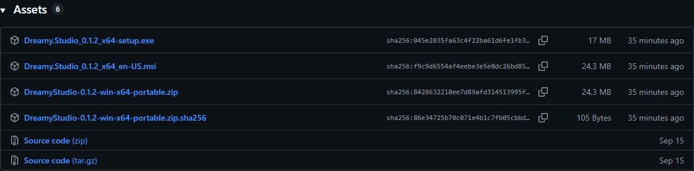
Bước 1/3
Tải về
Mở trang phát hành mới nhất trên GitHub, tìm mục Assets và tải một trong các file sau:
Với bản portable, giải nén vào một thư mục bất kỳ rồi mở. Với bộ cài, chạy file vừa tải và làm theo các bước trên màn hình.
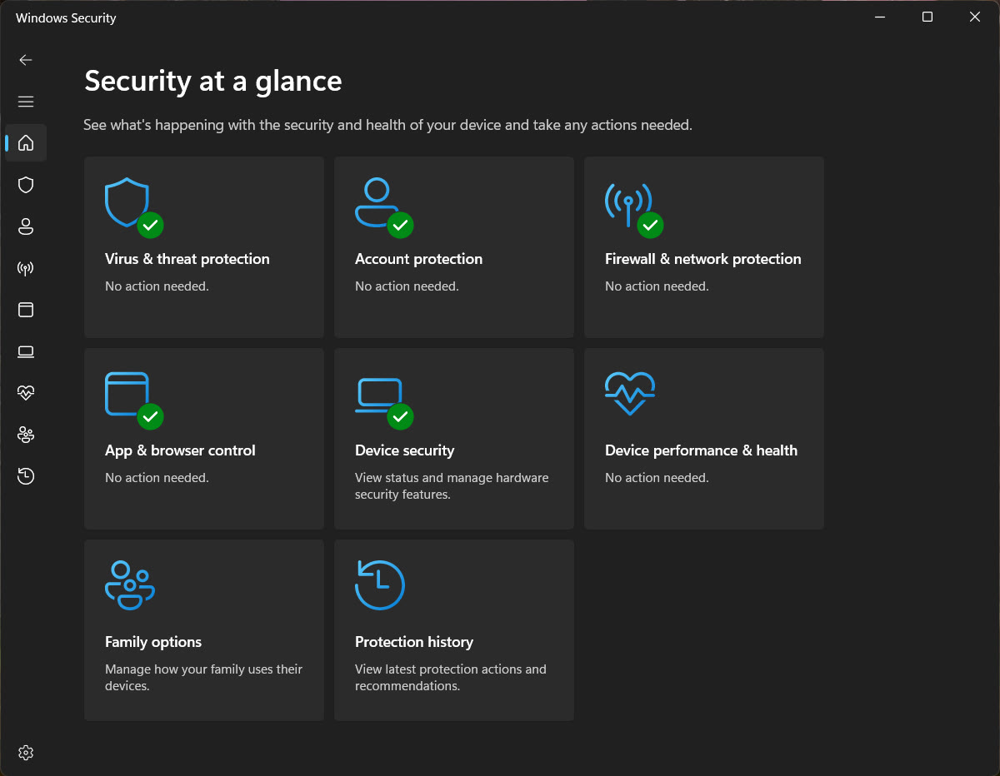
1 · Windows Security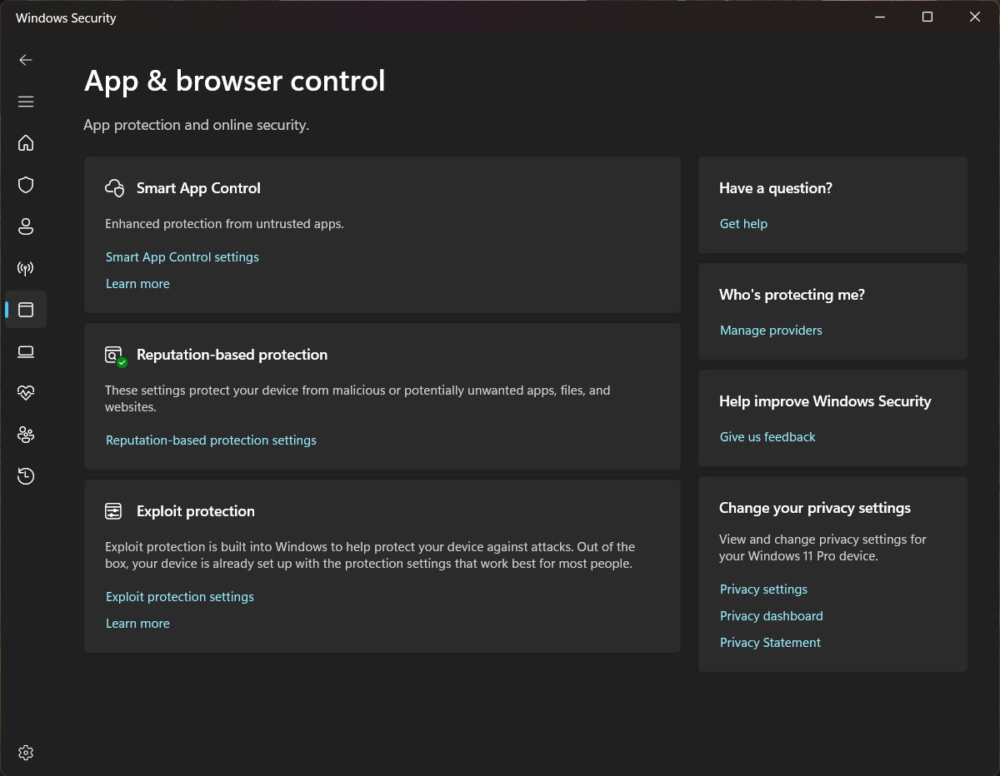
2 · App & browser control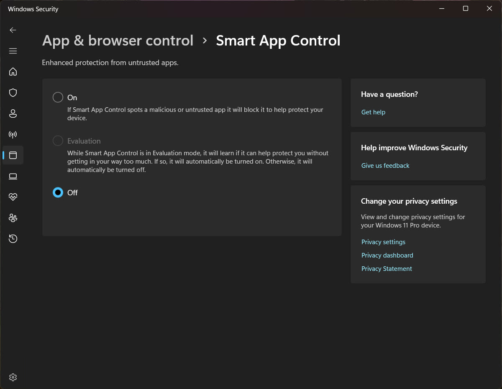
3 · Chọn OffBước 2/3
Thiết lập Windows
Dreamy Studio chưa có chữ ký số. Trên Windows 11, nếu Smart App Control đang bật, Windows sẽ chặn app ngay khi mở. Tắt Smart App Control trước khi mở app:
- Mở Windows Security từ Start menu, chọn App & browser control.
- Bấm Smart App Control settings.
- Chọn Off.
- Windows 10 không có Smart App Control. Nếu không thấy mục này hoặc nó đã ở Off, bỏ qua bước này.
- Tùy phiên bản Windows, sau khi tắt có thể không bật lại được Smart App Control nếu không cài lại Windows.
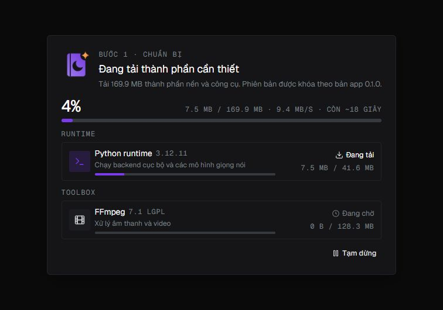
Bước 3/3
Mở app
Mở Dreamy Studio từ Start menu, hoặc chạy
DreamyStudio.exe
trong thư mục đã giải nén nếu dùng bản portable. Lần đầu mở, app tự tải các thành
phần cần thiết. Bạn chỉ cần chờ vài phút.
- Nếu Windows hiện “Windows protected your PC”, bấm More info rồi chọn Run anyway.
- Có thể bấm Tạm dừng và tiếp tục tải sau.
- Góc trên bên phải có nút đổi ngôn ngữ và giao diện sáng/tối.
Cấu hình
Tạo nơi lưu dữ liệu và kết nối các công cụ AI, giọng nói. Chỉ cần làm một lần.
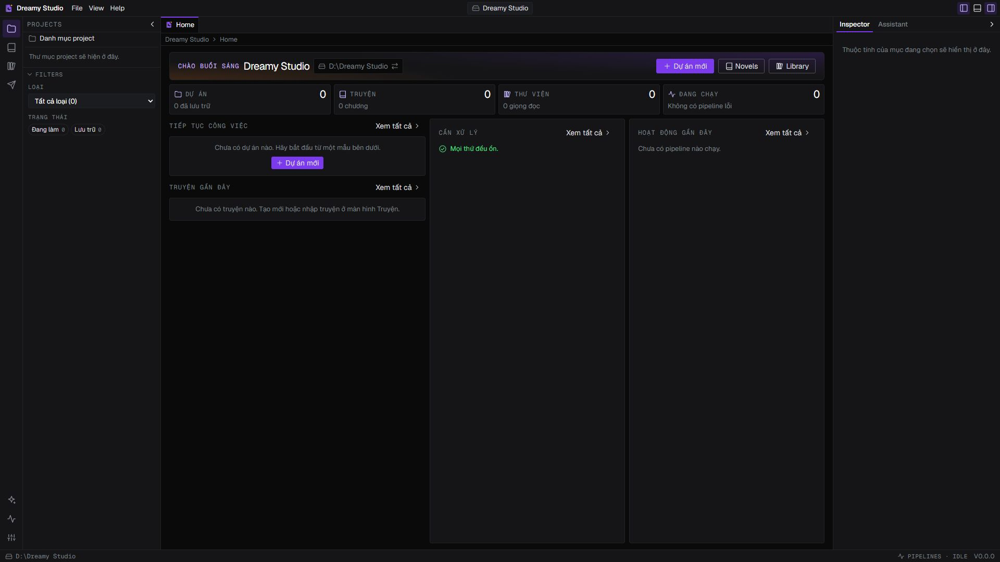
Bước 1/3
Tạo workspace
Workspace là một thư mục trên máy chứa toàn bộ truyện, dự án và thư viện của bạn. Chọn vị trí, đặt tên và app sẽ tạo sẵn mọi thứ. Lần sau chỉ cần chọn lại từ danh sách gần đây.
- Dữ liệu chỉ nằm trên máy bạn, không đồng bộ lên đâu cả.
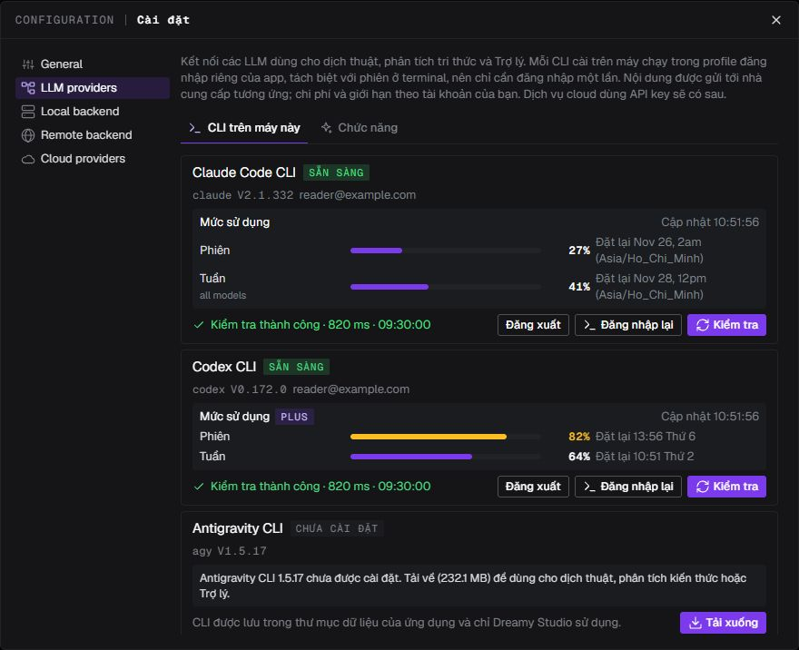
Bước 2/3
Kết nối AI
Mở Cài đặt → LLM providers, chọn CLI bạn muốn dùng (Claude Code, Codex hoặc Antigravity) và bấm Tải xuống. Tải xong, bấm Đăng nhập, làm theo hướng dẫn trong cửa sổ terminal hiện ra, rồi bấm Kiểm tra để thấy trạng thái Sẵn sàng.
- CLI được tải vào thư mục dữ liệu của app và chỉ Dreamy Studio dùng, không ảnh hưởng tới máy bạn.
- Chỉ cần đăng nhập một lần. Thanh mức sử dụng cho biết bạn còn bao nhiêu lượt trong phiên và trong tuần.
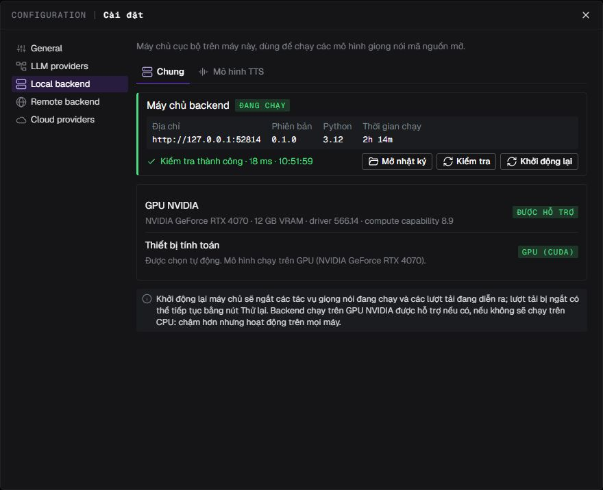
Bước 3/3
Chuẩn bị giọng nói
Mở Cài đặt → Local backend. Đây là máy chủ giọng nói chạy ngay trên máy bạn. Vào tab Mô hình TTS để tải model giọng đọc.
- Có GPU NVIDIA thì app tự dùng để tạo giọng nhanh hơn; không có thì chạy bằng CPU.
- Nếu có lỗi, bấm Khởi động lại hoặc Mở nhật ký.
Tiểu thuyết
Đưa truyện vào app và làm việc với từng chương.
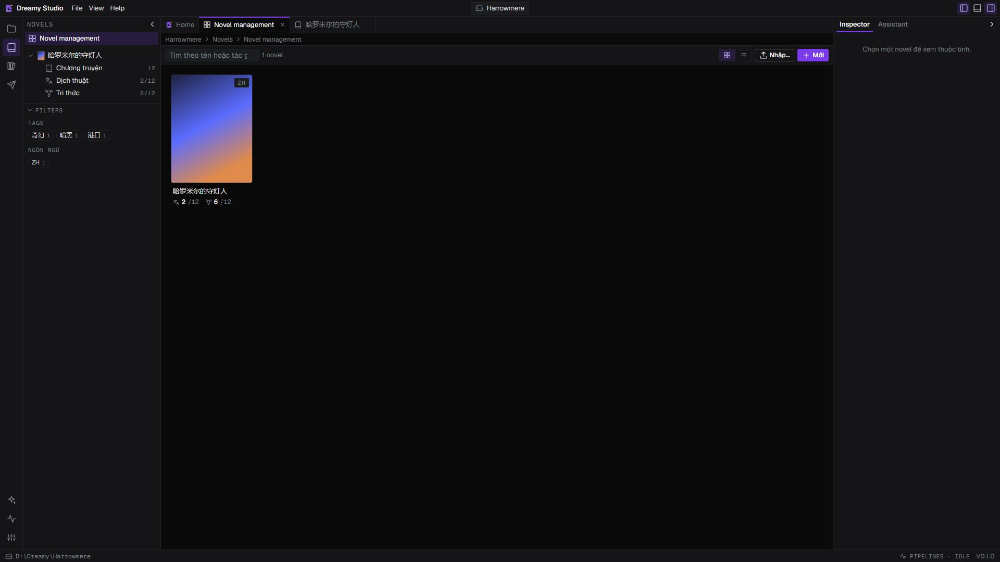
Bước 1/5
Mở danh sách truyện
Bấm biểu tượng Novels ở thanh bên trái rồi chọn Novel management. Bấm Mới để tạo truyện trống, hoặc Nhập… để đưa một truyện có sẵn vào app.
- Có thể xuất truyện thành gói .dsnovel để sao lưu hoặc chuyển sang máy khác.
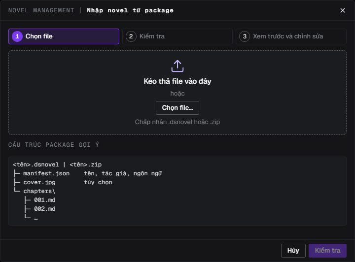
Bước 2/5
Nhập truyện
Bấm
Nhập…,
kéo thả file vào khung hoặc bấm
Chọn file…
App nhận gói
.dsnovel
hoặc
.zip.
Khung bên dưới cho thấy cấu trúc cần có:
manifest.json
chứa tên, tác giả, ngôn ngữ; ảnh bìa
cover.jpg
(tùy chọn) và thư mục
chapters
chứa các file .md, mỗi file là một chương.
- Tự đóng gói truyện của bạn theo đúng cấu trúc này là nhập được.
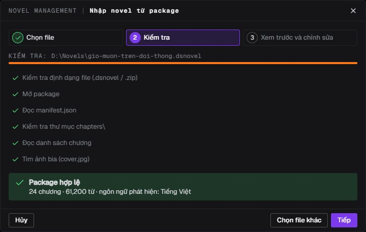
Bước 3/5
Kiểm tra và nhập
App kiểm tra lần lượt định dạng file, manifest, danh sách chương và ảnh bìa. Khi thấy Package hợp lệ, bấm Tiếp để xem trước và sửa tên, tác giả, mô tả trước khi nhập.
- Nếu trùng tên với truyện đã có, app sẽ cảnh báo trước khi nhập.
- Nhập lỗi giữa chừng sẽ không để lại dữ liệu dở dang.
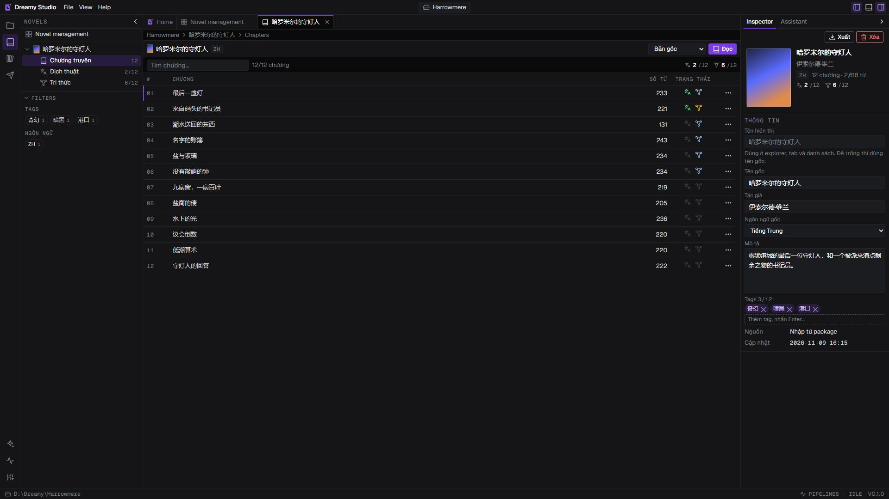
Bước 4/5
Quản lý chương
Mở một truyện để xem danh sách chương kèm số từ và trạng thái dịch, phân tích. Bạn có thể thêm, đổi tên và sắp xếp lại chương. Bảng bên phải dùng để sửa tên, tác giả, mô tả, tag và ảnh bìa.
- Chương đã dịch hoặc đã phân tích sẽ bị khóa để không làm hỏng kết quả.
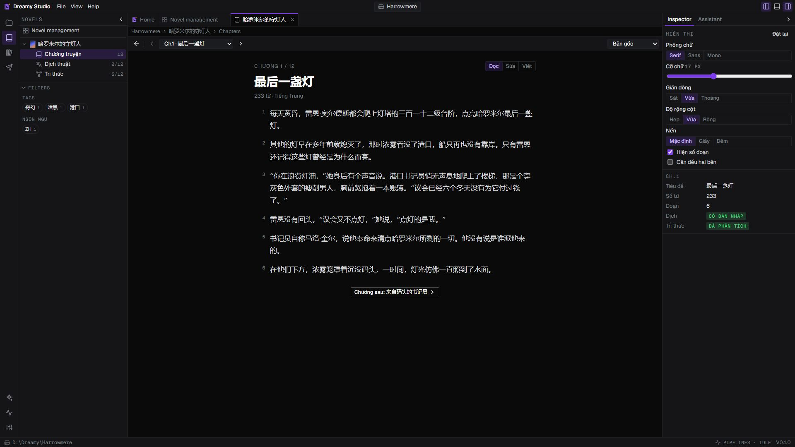
Bước 5/5
Đọc và chỉnh sửa
Nhấn đúp vào một chương để mở trình đọc. Bảng bên phải cho chỉnh phông chữ, cỡ chữ, giãn dòng, độ rộng và màu nền. Bạn có thể sửa đoạn văn ngay tại chỗ.
Dịch thuật
Năm bước nằm ngay trên đầu màn Dịch thuật, đi lần lượt từ trái sang phải.

Bước 1/5
Từ điển
Mở truyện, chọn Dịch thuật và chọn ngôn ngữ đích. Ở bước Từ điển, nhập cách dịch cho tên nhân vật, địa danh và thuật ngữ để bản dịch luôn thống nhất.
- Mỗi ngôn ngữ đích có từ điển riêng.
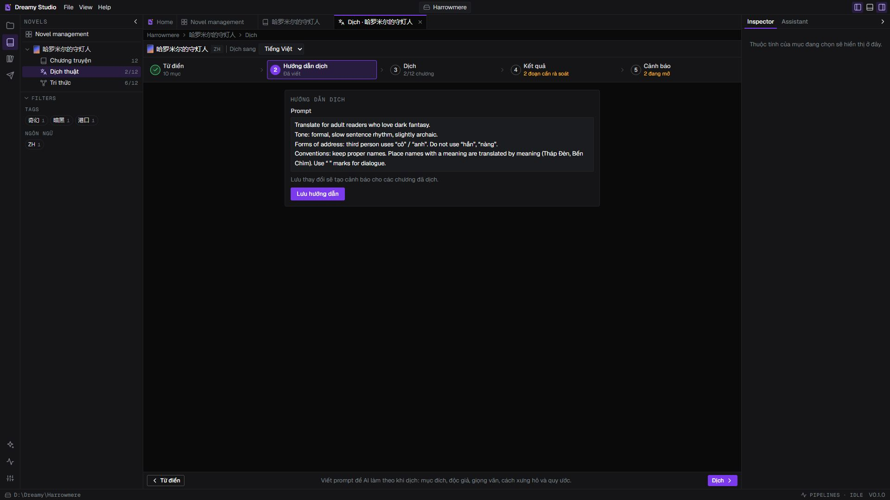
Bước 2/5
Hướng dẫn dịch
Viết vài dòng về văn phong, cách xưng hô và quy ước. AI sẽ làm theo hướng dẫn này cho mọi chương.
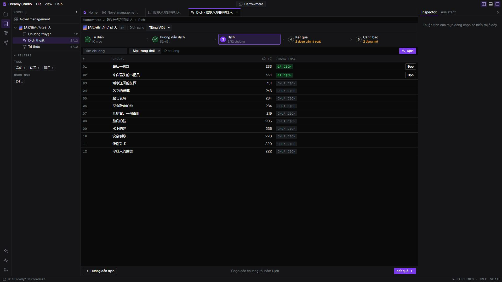
Bước 3/5
Dịch
Chọn chương chưa dịch, một khoảng chương hoặc tất cả rồi bắt đầu dịch. Tiến độ cập nhật theo từng chương và bạn có thể hủy bất cứ lúc nào.
- Việc dịch chạy nền, bạn vẫn làm việc khác được.
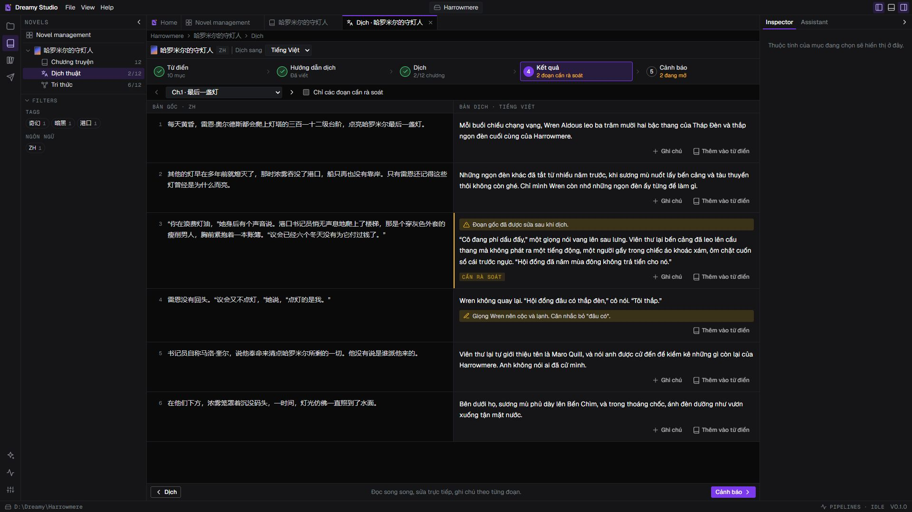
Bước 4/5
Kết quả
Bản gốc và bản dịch nằm song song. Các đoạn cần xem lại được đánh dấu để bạn sửa và ghi chú từng đoạn.
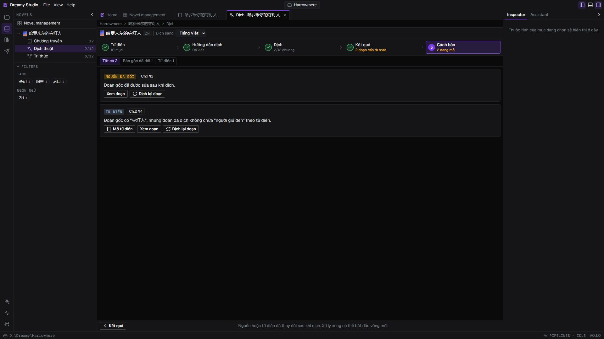
Bước 5/5
Cảnh báo
App tự tìm những đoạn chưa dùng đúng cách dịch trong từ điển. Sửa xong thì cảnh báo tự biến mất.
Tri thức
Để AI đọc truyện và ghi lại nhân vật, địa danh, sự kiện kèm bằng chứng.
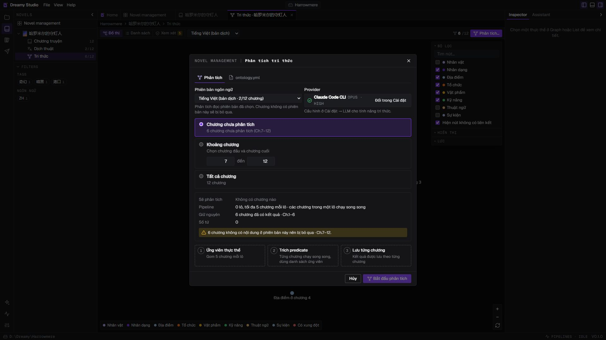
Bước 1/3
Phân tích
Trong màn Tri thức, bấm Phân tích… Chọn bản gốc hoặc bản dịch, chọn chương cần phân tích rồi bấm Bắt đầu phân tích.
- App chia thành từng lô tối đa 5 chương.
- AI dùng cho việc này được chọn trong Cài đặt → LLM.
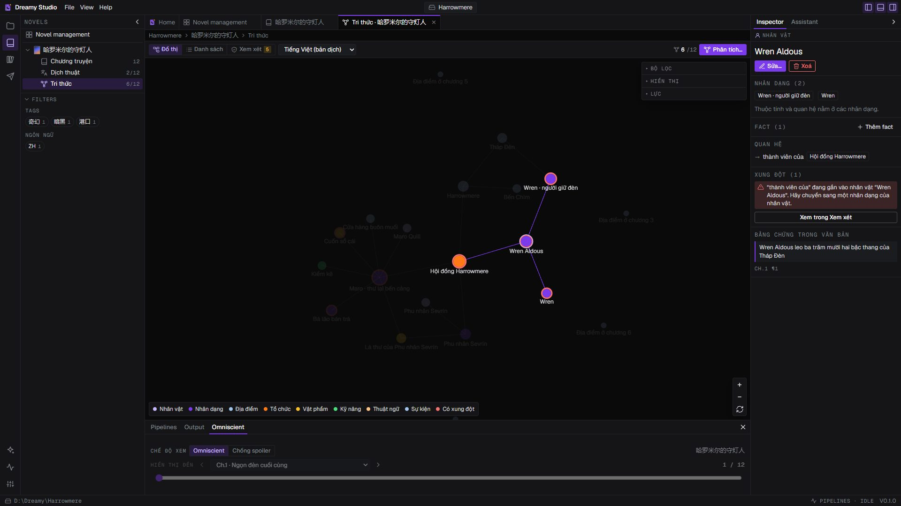
Bước 2/3
Khám phá
Chọn một nhân vật hoặc địa danh để xem các mối quan hệ, xung đột và đoạn văn làm bằng chứng ở bảng bên phải. Panel Omniscient phía dưới cho chuyển sang chế độ Chống spoiler, chỉ hiện những gì đã xuất hiện đến chương bạn chọn.
- Chuyển sang Danh sách để tìm và lọc nhanh hơn.
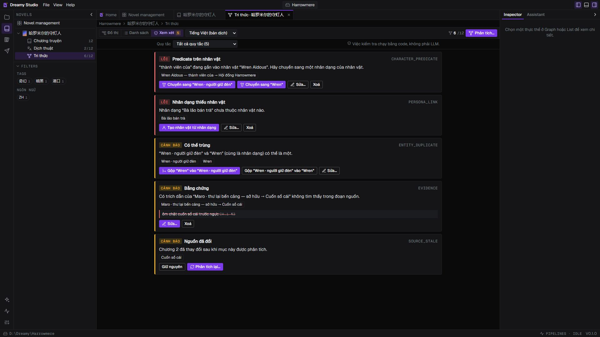
Bước 3/3
Xem xét
Tab Xem xét liệt kê những chỗ chưa nhất quán như trùng nhân vật hay bằng chứng không khớp. Mỗi mục có nút sửa nhanh.
- Trợ lý AI cũng có thể đề xuất cách sửa giúp bạn.
Dự án & kịch bản
Mỗi sản phẩm là một dự án gắn với một truyện.
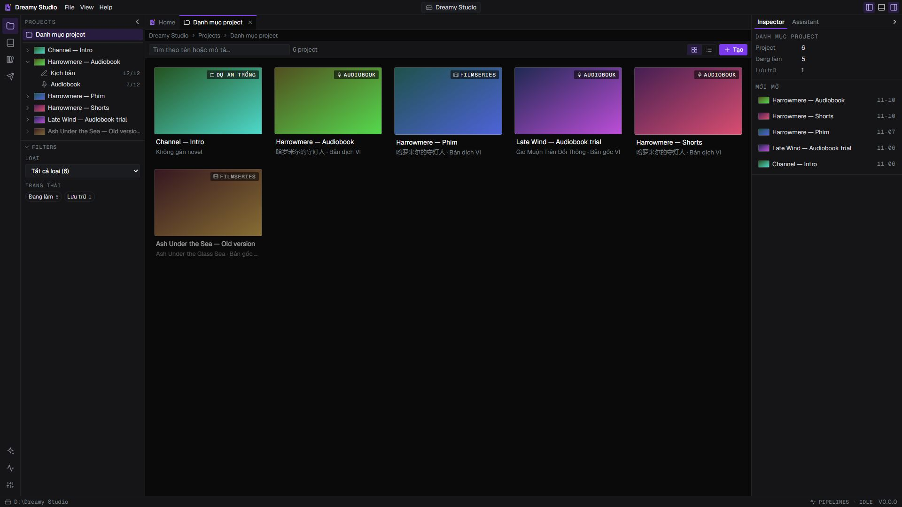
Bước 1/3
Danh mục dự án
Bấm biểu tượng Projects ở thanh bên trái rồi chọn Danh mục project để xem mọi dự án.
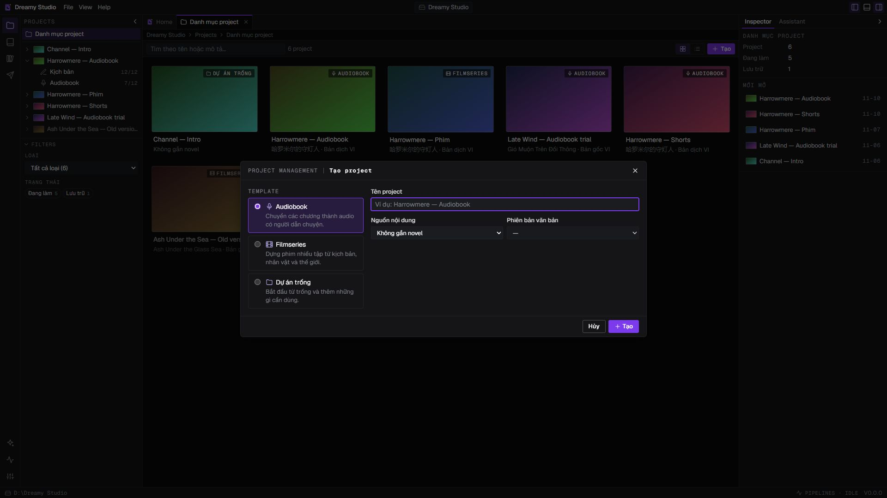
Bước 2/3
Tạo dự án
Bấm Tạo, chọn template Audiobook, đặt tên rồi chọn truyện làm nguồn nội dung.
- Template Filmseries đang ở trạng thái sắp ra mắt.

Bước 3/3
Viết kịch bản
Mở Kịch bản trong dự án. App tự tạo khung theo từng chương. Mỗi dòng là một khối: lời kể, lời thoại của nhân vật hoặc khoảng nghỉ. Mọi thay đổi được lưu tự động.
- Danh sách nhân vật bên phải lấy từ Tri thức của truyện.
Audiobook
Biến kịch bản thành file âm thanh có phụ đề.
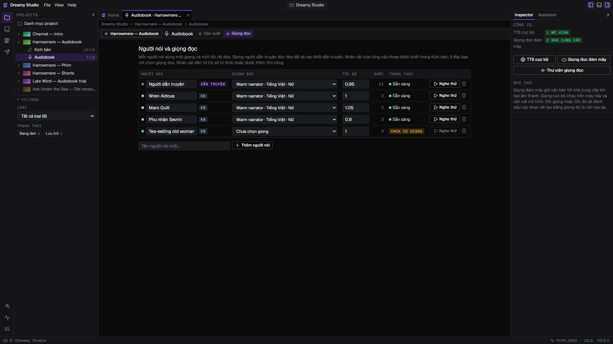
Bước 1/3
Gán giọng
Mở Audiobook trong dự án và vào tab Giọng đọc. Chọn giọng và tốc độ đọc cho người dẫn truyện và từng nhân vật.
- Đổi giọng sau này thì các đoạn đã tạo sẽ được đánh dấu cần tạo lại.

Bước 2/3
Nghe và rà soát
Tab Sản xuất chia kịch bản thành từng đoạn đọc với trạng thái riêng. Bấm Nghe cả chương hoặc nghe từng đoạn; đoạn nào chưa ổn thì tạo lại.
- Bảng bên phải chỉnh khoảng lặng giữa các đoạn và âm lượng.
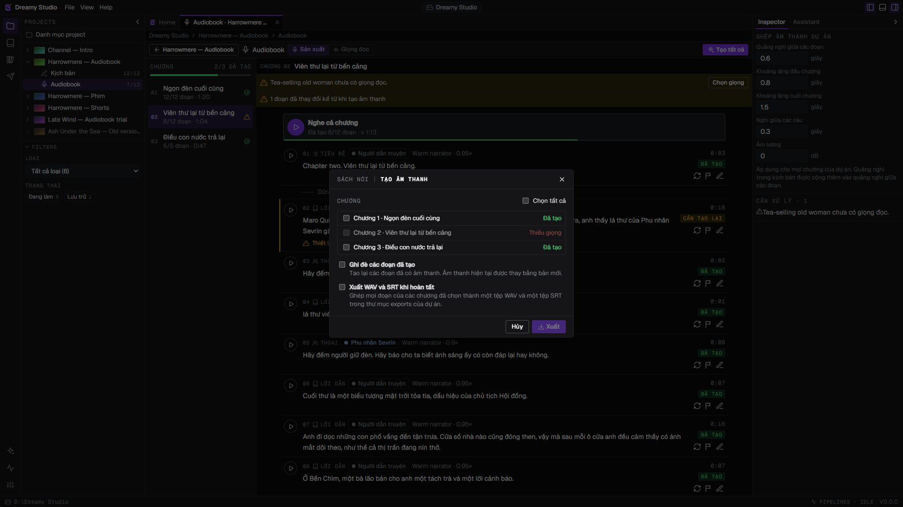
Bước 3/3
Tạo và xuất
Bấm Tạo tất cả, chọn chương rồi bật Xuất WAV và SRT khi hoàn tất. File âm thanh và phụ đề được lưu trong thư mục exports của dự án.
- Chương còn thiếu giọng sẽ được báo trước để bạn xử lý.
Giọng đọc
Thư viện giọng dùng chung cho mọi dự án. Chọn giọng mẫu có sẵn hoặc nhân bản giọng từ một đoạn ghi âm.
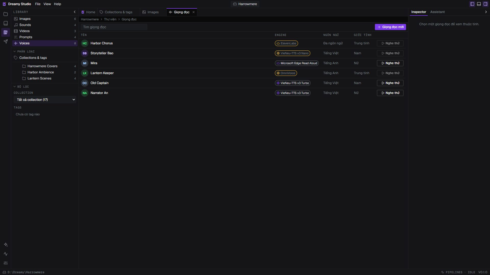
Bước 1/3
Thư viện giọng
Bấm biểu tượng Library rồi chọn Voices. Mỗi giọng ghi rõ engine, ngôn ngữ và giới tính. Bấm Nghe thử để nghe mẫu.
- Giọng thuộc engine chưa tải model sẽ bị khóa nghe thử.
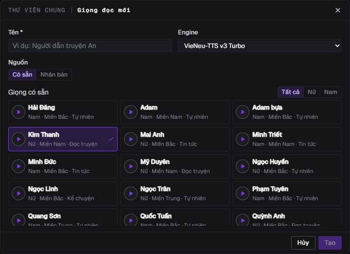
Bước 2/3
Chọn giọng mẫu
Bấm Giọng đọc mới, đặt tên và chọn engine. Ở Nguồn, chọn Có sẵn rồi chọn một giọng mẫu. Mỗi giọng ghi giới tính, vùng miền và phong cách đọc như tự nhiên, đọc truyện hay tin tức. Bấm ▶ để nghe thử, lọc theo Nữ hoặc Nam.
- VieNeu-TTS v3 Turbo có 25 giọng tiếng Việt, VieNeu-TTS v3 Nano có 11 giọng, OmniVoice có 7 giọng theo độ tuổi.
- Giọng đọc truyện như Kim Thanh, Mỹ Duyên hay giọng kể chuyện Ngọc Linh hợp với người dẫn truyện.
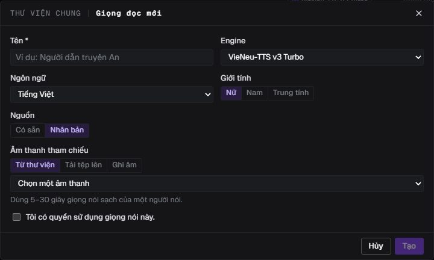
Bước 3/3
Nhân bản giọng
Chọn Nhân bản, đặt ngôn ngữ và giới tính, rồi lấy âm thanh tham chiếu Từ thư viện, Tải tệp lên hoặc Ghi âm ngay trong app. Tích ô xác nhận quyền sử dụng rồi bấm Tạo.
- Dùng 5–30 giây giọng nói rõ, sạch tiếng ồn, của một người nói.
- Chỉ nhân bản giọng mà bạn có quyền sử dụng.
Trợ lý AI
Trợ lý đọc dữ liệu trong workspace để trả lời và đề xuất chỉnh sửa. Mọi thay đổi đều hiện thành thẻ để bạn duyệt trước.
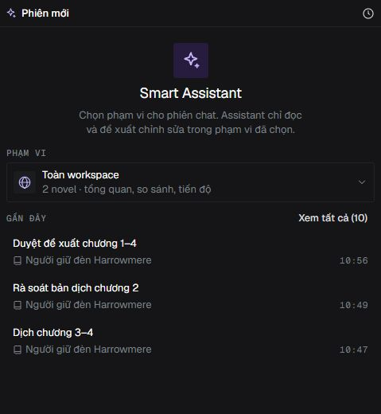
Bước 1/7
Mở phiên
Bấm biểu tượng ✦ ở thanh bên trái hoặc tab Assistant ở bảng bên phải. Chọn phạm vi: toàn workspace, một truyện hoặc một dự án. Trợ lý chỉ đọc và đề xuất trong phạm vi đã chọn.
- Các phiên cũ nằm ở mục Gần đây, bấm Xem tất cả để tìm theo nội dung.
- AI dùng cho Trợ lý được chọn trong Cài đặt → LLM providers → Chức năng.
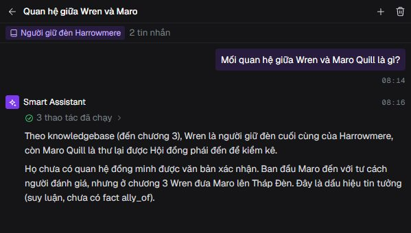
Bước 2/7
Hỏi đáp
Gõ câu hỏi như bình thường, ví dụ “Mối quan hệ giữa Wren và Maro Quill là gì?” rồi nhấn Enter. Trợ lý tra cứu chương, bản dịch, từ điển và tri thức để trả lời. Dòng “3 thao tác đã chạy” cho biết nó đã đọc những gì.
- Shift+Enter để xuống dòng.
- Trợ lý nói rõ khi một ý chỉ là suy luận, chưa có bằng chứng trong truyện.
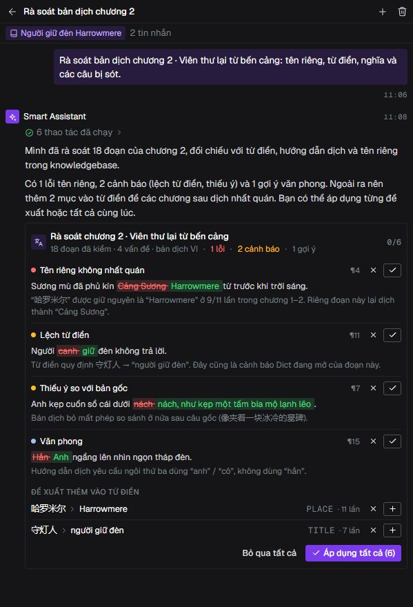
Bước 3/7
Rà soát bản dịch
Nhờ “Rà soát bản dịch chương 2”. Trợ lý trả về một thẻ liệt kê vấn đề theo mức độ (lỗi, cảnh báo, gợi ý), mỗi mục có đoạn cũ, đoạn đề xuất và lý do, kèm các mục nên thêm vào từ điển. Bấm ✓ để áp dụng từng mục, ✕ để bỏ qua, hoặc Áp dụng tất cả.
- Đề xuất không còn áp dụng được (vì đoạn đã bị sửa) sẽ được báo rõ.
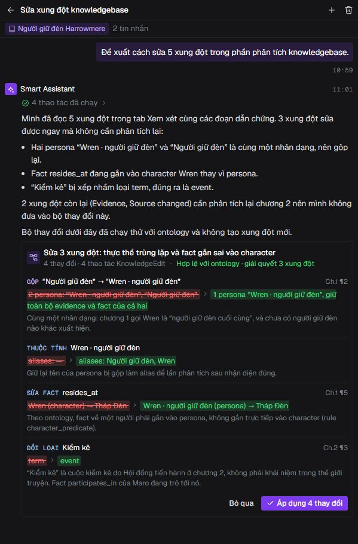
Bước 4/7
Sửa tri thức
Nhờ “Đề xuất cách sửa các xung đột trong tri thức”. Trợ lý gom các thay đổi như gộp nhân vật trùng, đổi loại hay sửa fact vào một thẻ. Thẻ đã được kiểm tra với các quy tắc và cho biết sẽ giải quyết bao nhiêu xung đột. Bấm Áp dụng để ghi tất cả một lần.
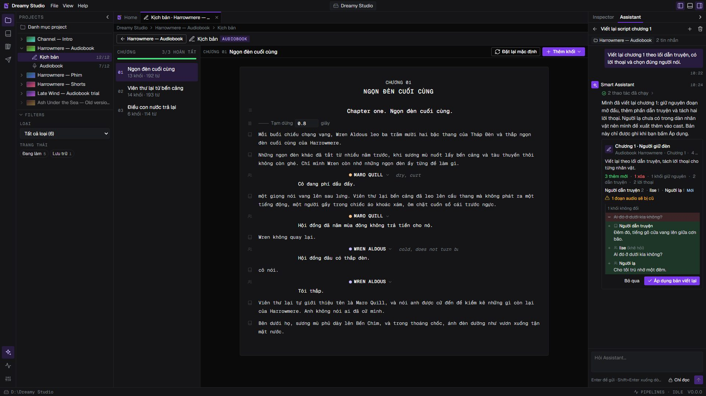
Bước 5/7
Viết lại kịch bản
Mở Trợ lý ngay trong màn Kịch bản và nhờ viết lại một chương. Thẻ đề xuất cho thấy khối nào được thêm, xóa hay giữ nguyên, nhân vật mới và số đoạn audio sẽ phải tạo lại. Bấm Áp dụng bản viết lại hoặc Bỏ qua.
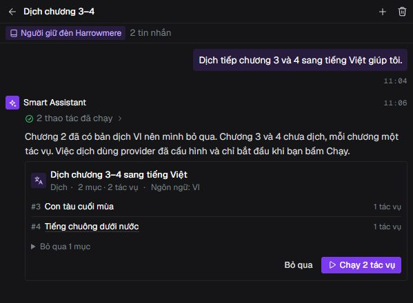
Bước 6/7
Chạy pipeline
Nhờ “Dịch tiếp chương 3 và 4 sang tiếng Việt”. Trợ lý chuẩn bị sẵn tác vụ, tự bỏ qua chương đã dịch, và chỉ bắt đầu khi bạn bấm Chạy.
- Tiến độ xem ở bảng Pipelines phía dưới cửa sổ.
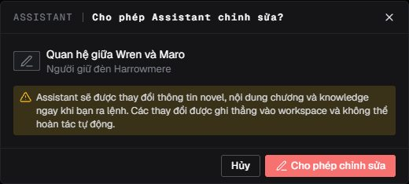
Bước 7/7
Quyền chỉnh sửa
Mặc định trợ lý Chỉ đọc. Muốn trợ lý sửa trực tiếp thông tin truyện, nội dung chương hay tri thức theo lệnh, bấm nút Chỉ đọc dưới khung chat rồi chọn Cho phép chỉnh sửa.
- Quyền này chỉ áp dụng cho phiên hiện tại và tắt lại được bất kỳ lúc nào.
- Thay đổi được ghi thẳng vào workspace và không tự hoàn tác.
Khắc phục sự cố
Các tình huống hay gặp và cách xử lý.
Windows hiện “Windows protected your PC”
Bấm More info, rồi chọn Run anyway. Cảnh báo này xuất hiện vì app chưa có chữ ký số của nhà phát hành. Cài bằng lệnh PowerShell sẽ không gặp cảnh báo này.
Windows 11 vẫn chặn ứng dụng
Nếu máy bật Smart App Control, Windows có thể chặn ứng dụng chưa có chữ ký số dù bạn cài bằng cách nào. Hiện chưa có cách khắc phục cho trường hợp này.
Không dịch hay phân tích được
Vào Cài đặt → LLM providers, kiểm tra CLI đã tải xong và đã đăng nhập (trạng thái Sẵn sàng). Nếu vẫn lỗi, mở log của lần chạy trong Lịch sử pipeline.
Không tạo được audio
Xem các cảnh báo ở đầu màn Audiobook: nhân vật chưa có giọng hoặc model chưa tải. Nếu máy chủ giọng nói báo lỗi, vào Cài đặt → Local backend và bấm Khởi động lại.
Không chọn được GPU
Cần card NVIDIA và CUDA runtime đã tải xong trong Cài đặt → Local backend.